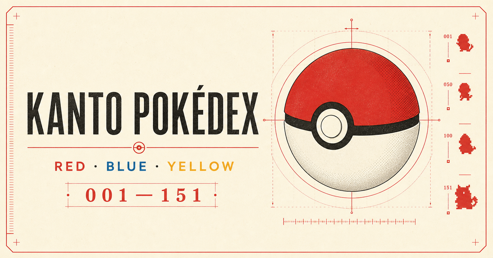
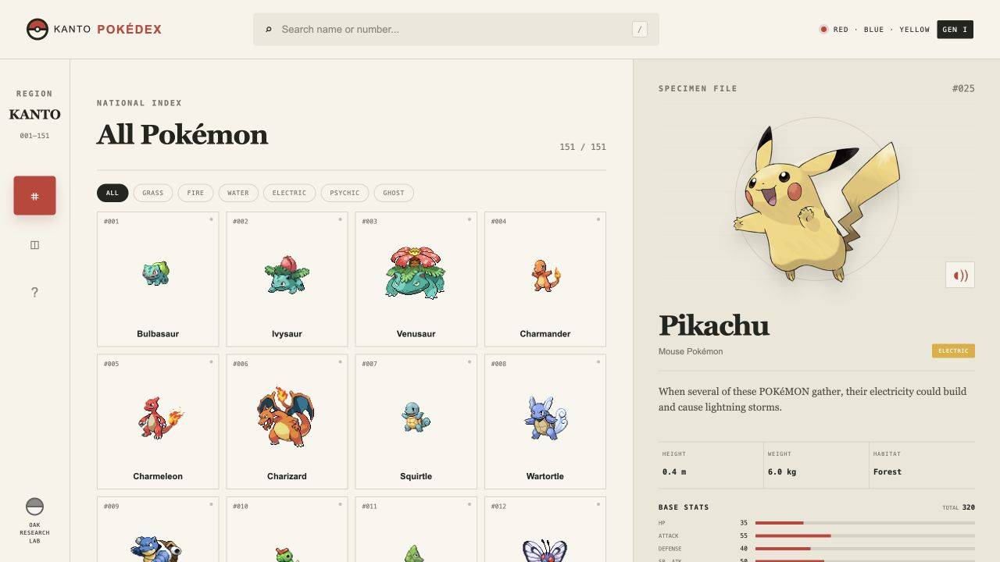
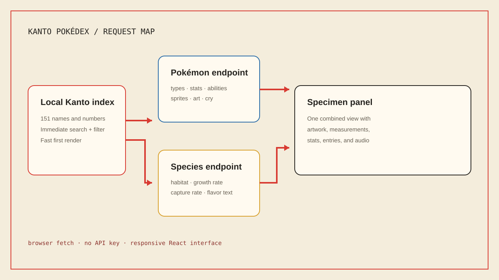

Browse without waiting
A local roster shows all 151 entries immediately, with search by name or number and quick type filters.
PROJECT 06 INTERACTIVE FIELD GUIDE LIVE
A searchable field guide to the original 151 Pokémon, built to feel like a research archive instead of a basic list of API results.

I wanted one place where I could browse the full Kanto roster, search quickly, and still slow down to read the details of one Pokémon. The biggest design problem was fitting both the index and the specimen file on the same screen without making either side feel crowded.
A local roster shows all 151 entries immediately, with search by name or number and quick type filters.
The selected file combines artwork, descriptions, abilities, measurements, habitat, stats, and cry playback.
The three-column desktop layout rearranges for tablets and phones while keeping every core action available.
The cream paper texture, red measurement marks, serif headings, and compact metadata helped the app feel connected to a field guide. The interface is still modern underneath, with keyboard navigation and reduced-motion support.

Search, filters, roster cards, and the selected entry stay visible together on desktop.

The index appears immediately while deeper details load only for the selected entry.
The Pokémon endpoint provides stats, types, abilities, measurements, sprites, artwork, and cries. The species endpoint adds habitat, growth rate, capture rate, and game descriptions.
Visitors can search by name or number, filter by type, select an entry, and use the left or right arrow keys to move through the index.
The local index remains usable when a detail request fails, and the specimen panel gives the visitor a retry path.
The repository has a vinext build for OpenAI Sites and a Vite build for Vercel, both using the same page and stylesheet.
Getting information from an API was only the first step. The harder and more interesting work was deciding what belonged together and how a visitor should move through it.
Structured data, sprites, artwork, and cries come from PokéAPI and the PokéAPI sprite repository. Pokémon names and characters belong to Nintendo, Game Freak, and The Pokémon Company. This is an unofficial, non-commercial fan project.
PokéAPI documentation ↗